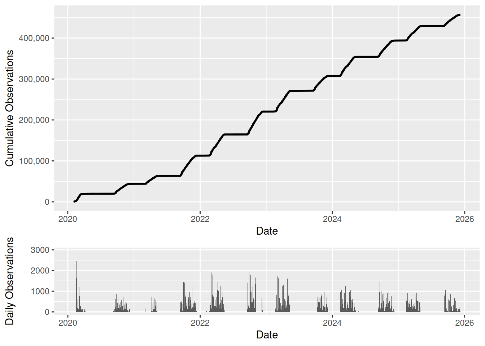
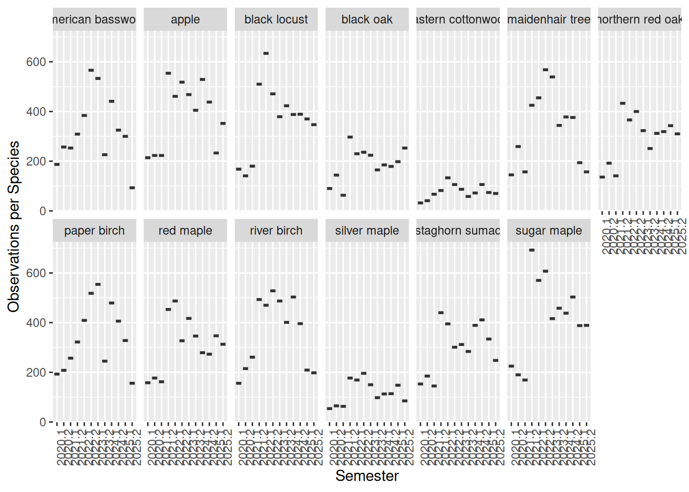
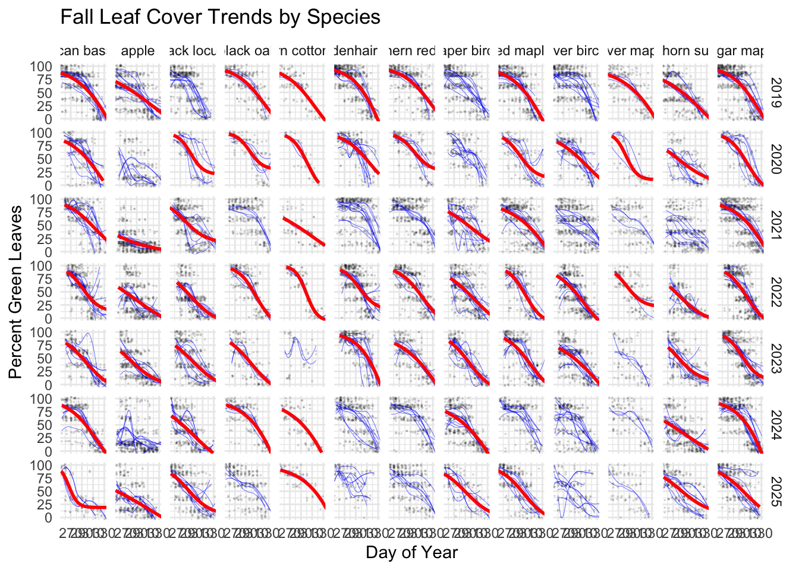

Phenology Observations at the University at Buffalo
Overview
Phenology is the study of the timing of ecological events such as leaf-out in spring, flowering in summer, and senescence in fall. These events are sensitive indicators of climate variability and change.
Throughout the semester, students in the Earth, Environment, and Climate Lab (GEO105) at the University at Buffalo monitor trees on North Campus and upload observations to Nature’s Notebook and the USA National Phenology Network. This site summarizes those observations.
These data were last updated on 2025-12-24 14:54:01.937994.
Trees at the University at Buffalo
The map below shows the locations of monitored trees on UB’s North Campus.
Current Observation Status
To date, the program has collected 497,743 individual phenological observations.
Observations by Species
Observations Over Time

Species-Level Sampling Effort

Seasonal Phenology Patterns
The following plot
